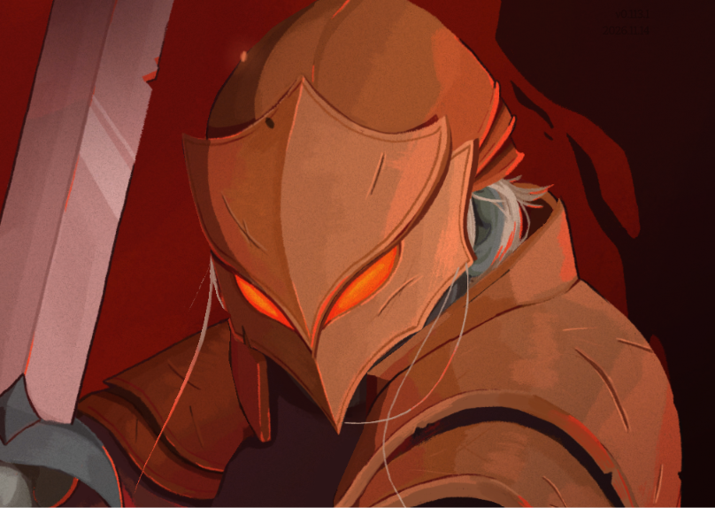
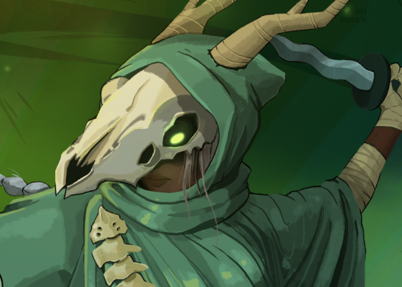
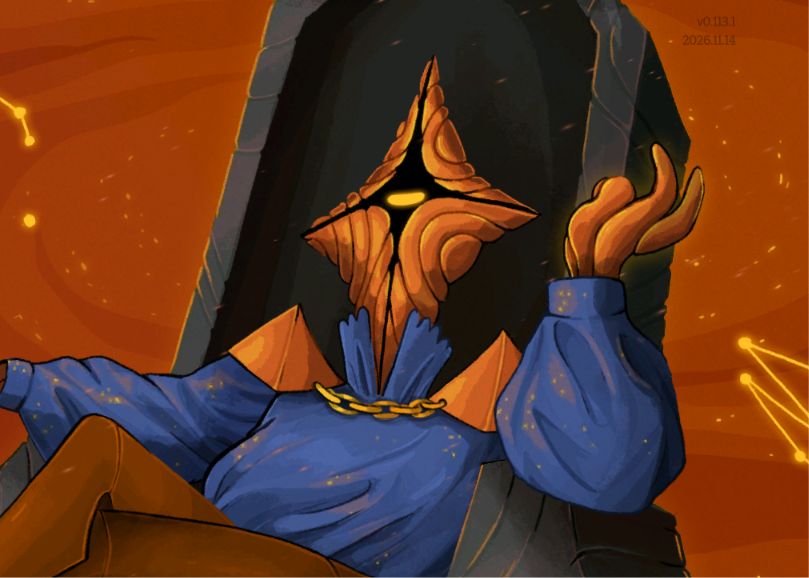
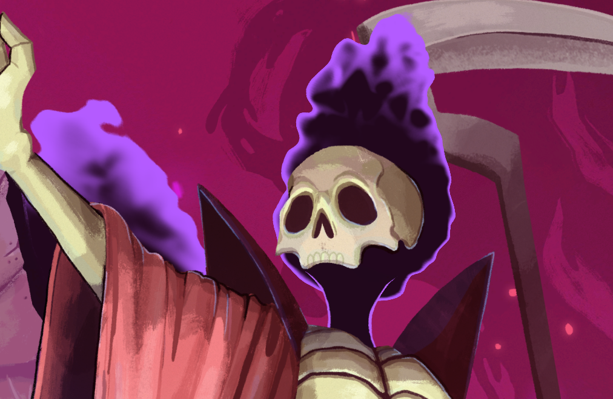
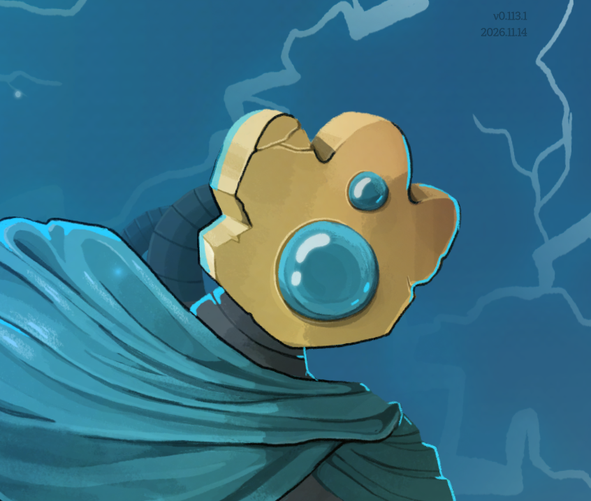

Les personnages
A chaque début de chaque partie, le joueur choisit un personnage parmi les six disponibles. Chacun possède ses propres cartes et reliques, ainsi qu'un style de jeu unique
Poour débloquer chaque personnage, il suffit de faire une partie avec le personnage précédent, même pas besoin de gagner ! Vous commencez avec le soldat de Fer et débloquez les personnages dans l'ordre indiqué sur cette page
Le Soldat de fer

Le Soldat de Fer est le permier personnage que vous pourrez jouer, il cherche a augmenter sa force, un statut qui augmente les dégats de ses attaques d'un montant fixe. Il applique également l'effet vulnérable à ses ennemis, qui augmente les dégats subis par ces derniers de 50%
Sa relique de base permet de régénérer 6 points de vie à chaque fin de combat.
La Silencieuse

La Silencieuse est plus fragile que le Soldat, et elle cherche au empoisonner ses ennemis ou les submerger sous un déluge de couteaux.
Sa relique de base lui permet de piocher 2 cartes supplémentaires lors du premier tour de chaque combat. On passe alors de 5 à 7 cartes, permettant au joueur de toujours avoir des cartes utiles dans sa main de départ.
Le Régent

Dirigeant d'un peuple alien, le Régent souhaite percer les mystères de la Spire pour en récupérer les richesses. Il possède une deuxième ressource en plus de l'énergie, les Etoiles. Celles-ci perdurent entre chaque tour et servent à déclencher de puissantes attaques. Le régent peut également invoquer Une immense épée et augmenter ses dégats au fur et a mesure du combat.
Sa relique de base lui confère 3 étoiles au début du combat.
La Tisse-Mort

Sa relique de base permet d'invoquer ou augmenter les points de vie d'Osty de 1 à chaque début de tour
Le Défectueux
